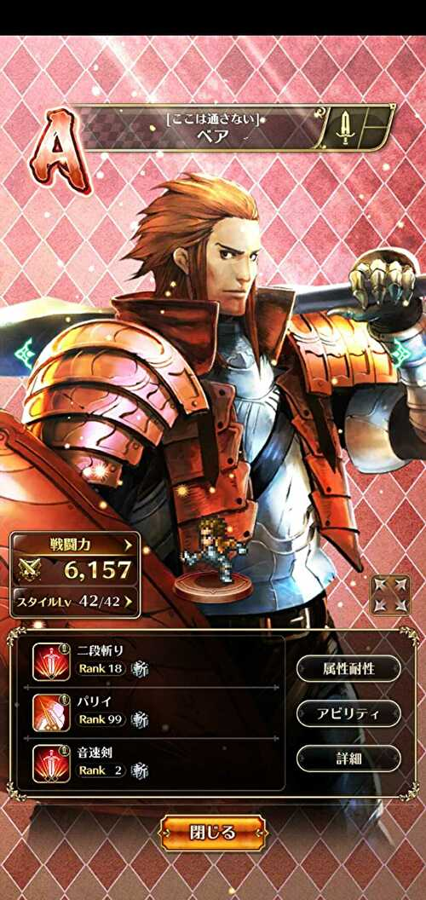
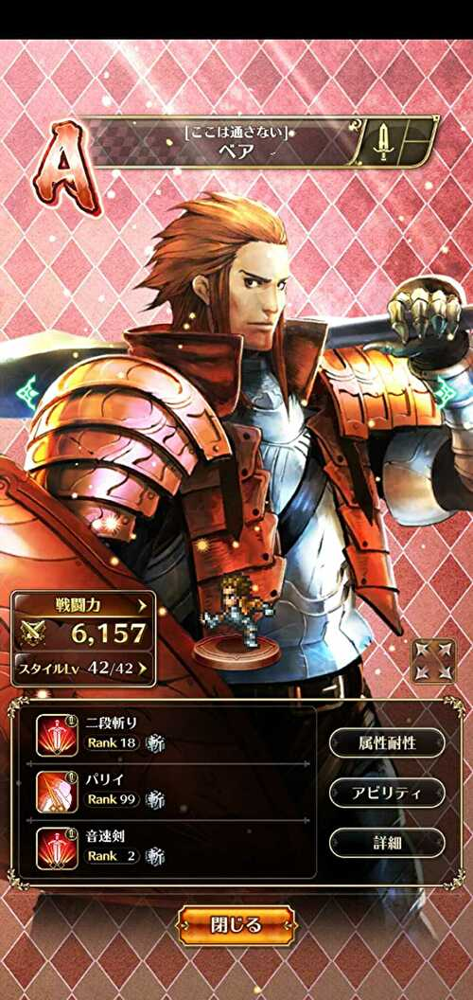
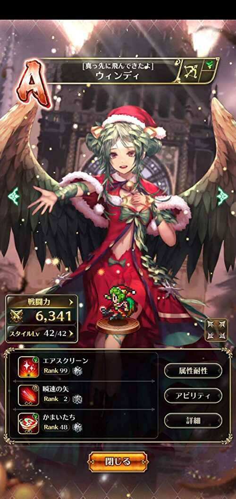
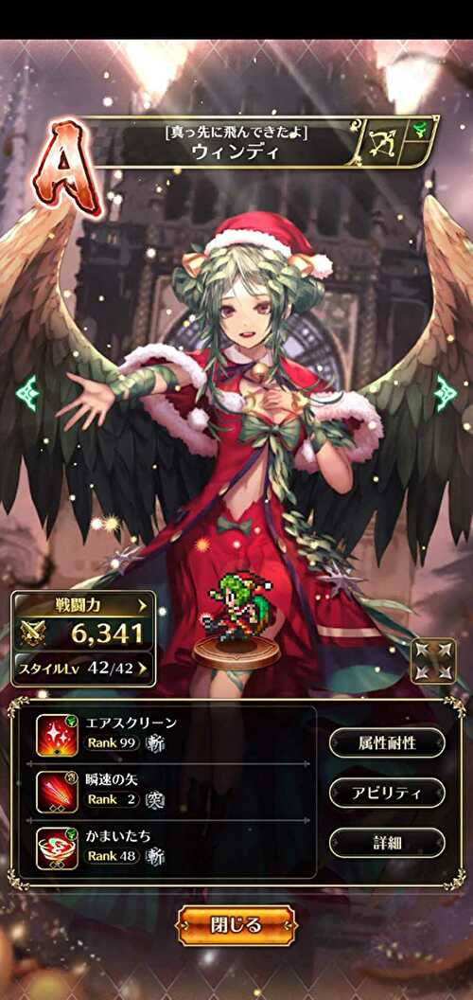
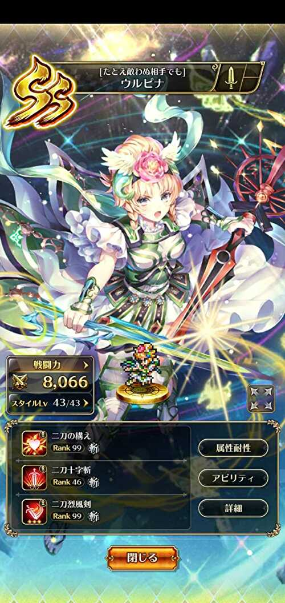
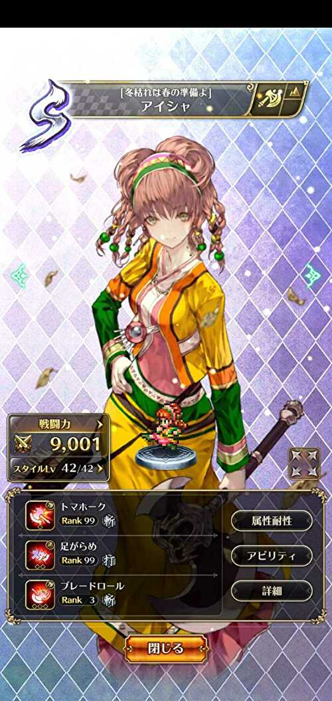
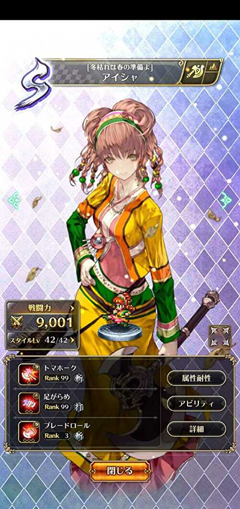

ロマサガＲＳの手動技のランク自慢
ロマサガRSで、手動でしか使われない技をせっせとランク上げしていました。多くの技がランク99になったのでその自慢をしたいだけの記事です。パリイとカウンタ―技についてはどうやってランクを上げたのかを動画付きで解説しています。
基本的には修業者の間と、毎朝の日課（魔物たっぷりの洞窟修練、ザクザク財宝収集、深奥の密林調査）でランクを上げました。
パリイ
パリイ
 



パリイはこんな感じで修業者の間でランク上げすると気持ちいいですよ！ 最初のターンだけ手動でパリイを選択して、２ターン目以降は右下のAll Repeatボタンを押すと早いです。
カウンター
マタドール
かすみ青眼
カモンベイビー
風車


ジョルトカウンター

クロスドリルドライバ
セルフバーニング

フリーズスパイク
SSノーラ未所持なのでジャストミートは対象外
カウンタ―技は以下の動画のようなやり方でランクを上げました。
※アザミのジョルトカウンターは既にランク99になっているため、この動画内ではランクアップはしていません。 鳳天舞の陣の真ん中にカウンタ―技を使用するキャラを配置。対象キャラの技を選択した後、右下のAll Repeatを押下。直後に全力AUTOを押下。
すると対象キャラはカウンタ―技を使用。カウンタ―技は敵の直接攻撃が来るたびにランクが上がる可能性があるため、運が良ければ１ターンで２回以上ランクが上がることもある。
対象キャラ以外は、１ターン目は通常攻撃。２ターン目はBP13以上の技を使用するため、大技のランク上げを兼ねることもできる。
※セルフバーニングは術なので、ランクが上がるのは戦闘終了時の１回のみ。また、フリーズスパイクは技使用時のみランクが上がるので１ターンでランクアップする回数は１回のみ
バフ
ハードファイア

ヒロイズム
クリウィルは未所持なので対象外
妖精光

水舞い
エアスクリーン
 

気合
フラメンコに誘われて
聖王の勝利の詩は5/30現在ランク上げ中
SS海の主の娘は未所持なので水祭りは対象外
BP回復
二刀の構え
グスタフは未所持なので対象外
状態異常付与
足がらめ
 

ナップ

風と樹のうた


SSファティーマ未所持なので睡魔剣は対象外